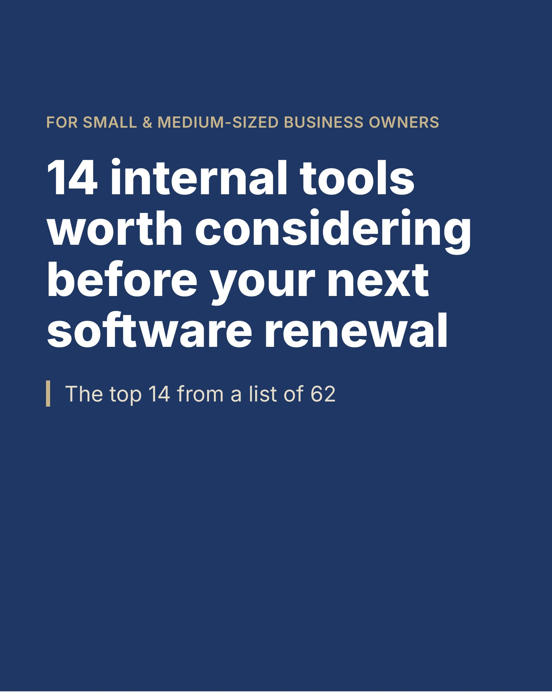

If a software renewal is coming up, here's something worth looking at before you sign.

In my last post, I looked at what people are building with AI. This one takes a closer look at one category: internal tools, sometimes called micro-SaaS.
Something is shifting in how businesses get software. AI has made it faster to build a tool around the way a business actually works. At the same time, a lot of software is priced per seat, and those costs can grow as a team grows. So more companies are asking a fair question: for some tools, does building make more sense than buying?
According to Lovable's published customer stories, Atonom reported going from about $40,000 a year on its CRM to about $1,200, and O3 World reported saving about $35,000 a year by building its own resource planning app. Results vary, so it's worth running the numbers first.
I put together and ranked a list of 62 internal tools for small and medium-sized businesses. They span finance, sales, operations, compliance, and HR. The top 14 are in this carousel: Top 14 of 62 (PDF). These may be worth a look, especially before a renewal.
For some, building has meant lower software costs and tools that fit better. Not everything needs replacing. Some tools can fill a gap or complement software you already pay for, and what makes sense depends on how your team works.
Owners often weigh build vs. buy, much like outsourcing vs. in-house or leasing vs. buying. Software companies compete for that decision, and a good one can win it on value.
• What recurring task costs your team the most time or money?
• Would a custom tool help, or does your current software already cover it well enough for how you work?
• What data would it touch, and should IT be involved?
• Who will own it: keep it secure, fix it, and update it when things change?
A bit about me: I'm a CPA and fractional AI lead with a background in audit and SEC reporting. I've been using AI since 2022, and I build with it every day, including custom internal tools. Coming from finance, I typically start with the numbers: what a tool costs, what it could save, and whether it's worth building at all. You stay in charge of the decisions. If you have one or two in mind, I can help with the numbers, the build, the roll out, or just the parts you need.
Here's how I generally work: We scope it together, including which features matter most. I build a prototype, then test and refine it. We walk through it together, and I can stay on for support and updates as you need them.
If you'd like the full list of 62, send me a message on LinkedIn or email me at hello.ai.audit@gmail.com, and I'll share it. And if one stands out, let's talk it through.
Sources:
Lovable customer stories: lovable.dev/customers (Atonom, O3 World, etc.)
Microsoft customer stories: microsoft.com/en/customers Komatsu Australia, John Cockerill
Tool templates: lovable.dev/templates/apps/internal-tools